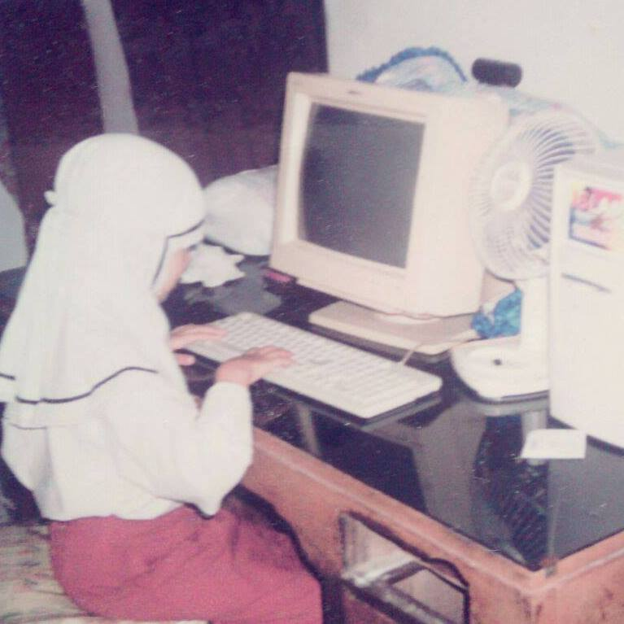
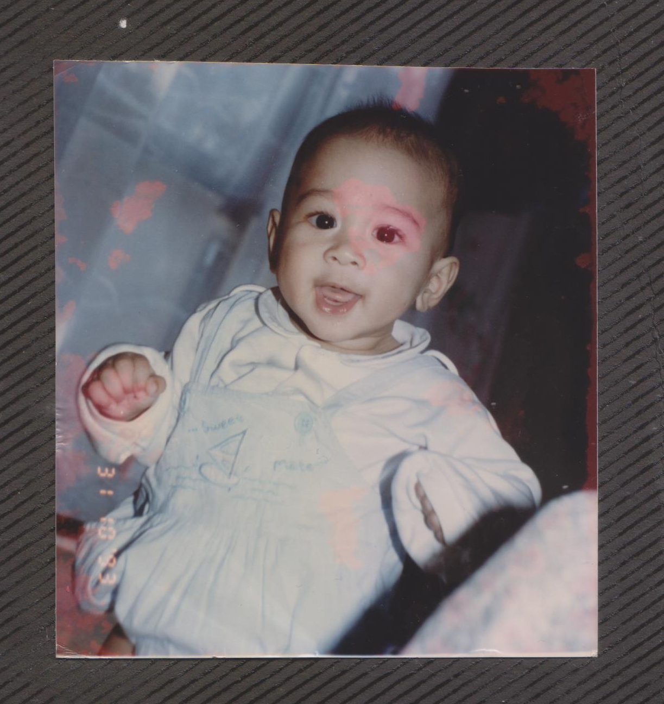
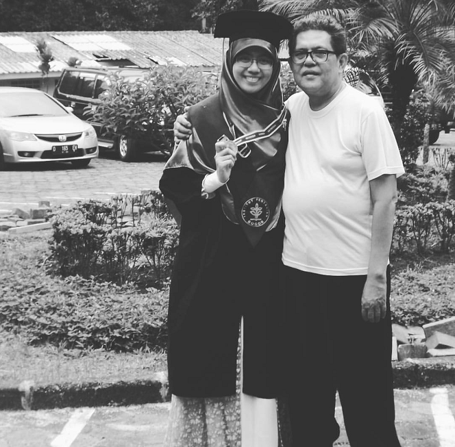
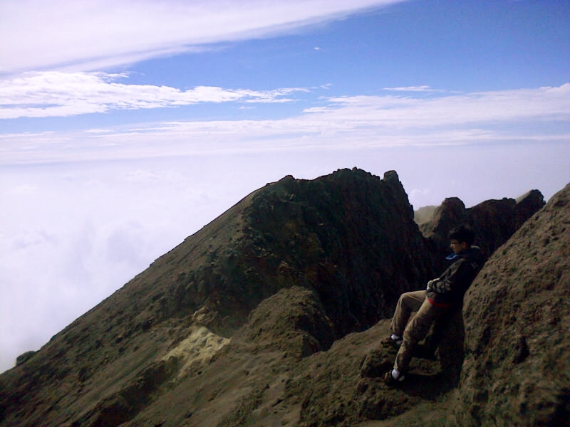
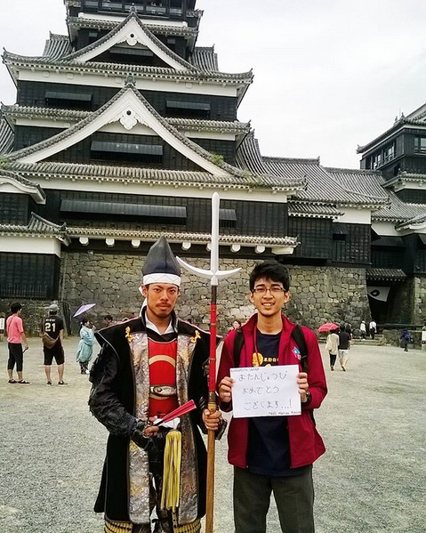
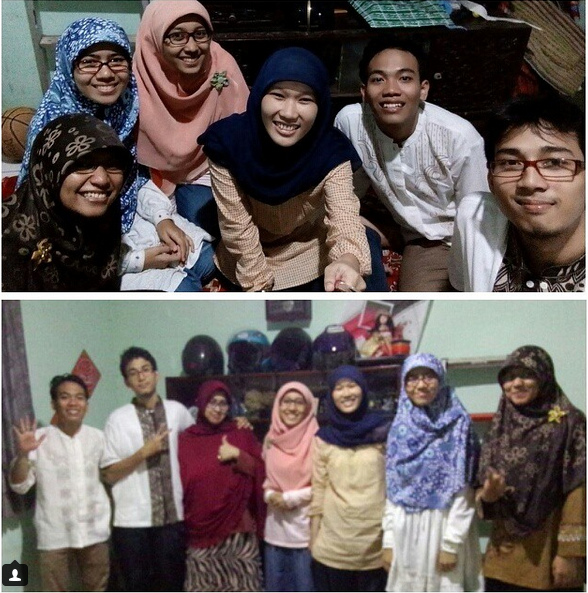
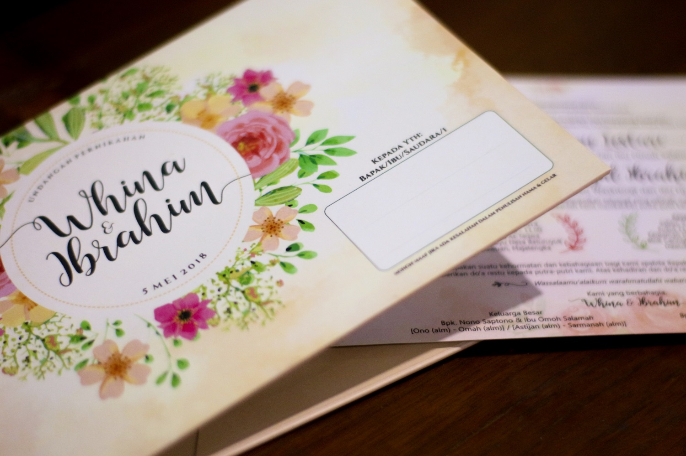

Assalamu'alaikum!
May 5th, 2018 Majalengka, Indonesia
Kami mengundang teman-teman semua ke acara pernikahan kami
Whina Ayu Lestari
Putri ketiga Bpk Nono Saptono dan Ibu Omoh Salamah kelahiran Majalengka, 4 November 1993. Sarjana Ilmu Komputer Angkatan 2011 IPB. Spesialis Data Science. INTJ.
Maulana Rizal Ibrahim
Putra pertama Bpk Wihatmoko Waskitoaji dan Ibu Lina Herlina kelahiran Yokohama, 20 Mei 1993. Sarjana Ilmu Komputer Angkatan 2011 IPB. Analis. INFJ.
Wedding Events
Akad Nikah
Masjid At-Takwa Blok Sabayu Desa Baturuyuk Dawuan, Majalengka.
Resepsi
Kediaman Mempelai Wanita Blok Caringin Desa Baturuyuk Dawuan, Majalengka.
Our Story
"Pernikahan adalah Sunnah yang dimuliakan, sesuatu yang harus disiapkan dalam kondisi keimanan sedang maksimal, siap secara ruhiyah, psikis, fisik, ilmu, dan finansial serta memiliki restu dari orang tua. Pernikahan merupakan sebuah penyatuan dua pribadi dan latar belakang berbeda yang bertujuan untuk meraih berkah dari Allah, memperoleh keturunan yang setiap ujiannya akan menjadi ladang kebaikan. Yang pada akhirnya pernikahan adalah upaya sepasang manusia untuk meningkatkan taqorrub pada Allah." - Whina
-
Ibrahim "Memberanikan Diri"
19 Januari, 2018"Sebelumnya, interaksi saya dan Whina di 2017 hanya percakapan formal terkait pekerjaan yang mirip dan sharing info beasiswa. Saat itu, saya sedang melakukan perjalanan ke Jogja ketika ditanya oleh seorang sahabat, "apakah ada seseorang yang kamu suka?". Jujur, sebelum ditanya seperti itu saya tidak pernah benar-benar memikirkannya. Baru setelah ditanya, yang terlintas di pikiran ternyata adalah Whina. Akhirnya pada 19 Januari saya memantapkan hati dan memberanikan diri untuk memulai proses. Jazakillah Vena atas bantuan informasi awalnya." - Ibrahim
-
Tukar Biodata
31 Januari, 2018Tanpa ada kesepakatan apapun sebelumnya, kami berdua menjalani proses suci ini dibantu oleh murobbi/ah kami, guru ngaji kami. Tepat pada 31 Januari, melalui masing-masing murobbi/ah kami bertukar biodata.
-
Ta'aruf
16 Februari, 2018Ta’aruf, bisa disandarkan pada aktifitas berupa proses perkenalan dua insan lawan jenis yang hendak melangsungkan hubungan keduanya ke jenjang yang lebih jauh, yaitu melamar kemudian menikah. Saat itu ta'aruf dilakukan di rumah murrobiah Whina, Ibu Haryati, di bilangan Jakarta Selatan. Ibrahim pergi bersama murobbinya, Kak Anto. Whina mengajukan tiga pertanyaan, Ibrahim satu pertanyaan. Sisanya lebih banyak nasihat baik dari guru-guru kami, jazakumullah khairan katsiran. Mudah-mudahan hati kami berlapang-lapang dalam menerima setiap butir hikmahnya.
-
Silaturahim Keluarga
10 Maret, 2018Kunjungan pihak keluarga Ibrahim ke pihak keluarga Whina di kediaman Whina di Majalengka untuk menjalin silaturahim yang mudah-mudahan atas seizin-Nya akan terus berlanjut.
-
Khitbah
30 Maret, 2018Pada 30 Maret ba'da shalat Jumat dilangsungkanlah proses khitbah di kediaman Whina di Majalengka. Pihak keluarga Ibrahim menyampaikan ajakan untuk menikah diwakilkan oleh Pakde Apan. Dilandasi 'azam yang baik untuk mengikuti sunah rosul-Nya, maka kedua belah pihak menyepakati bahwa tanggal 5 Mei 2018 sebagai hari H pernikahan.
-
D Day
5 Mei, 2018Every love story is beautiful, but ours is my favourite.
Our Gallery
-
Whina kecil
Mengenal Komputer
Whina semenjak kecil sudah mengenal dan tertarik dengan dunia komputer -
Ibrahim
Aktif sedari kecil!
Ibrahim saat masih kecil -
Whina Wisuda
Sarjana Komputer!
Apa dan Whina merayakan kelulusan wisuda S1 -
Ibrahim & Hiking
Di Puncak Merapi!
Sungguh perjuangan hidup dan mati untuk mencapai puncak gunung merapi -
Whina & Japan!
Saga University

"Mudah-mudahan nanti bisa studi sekalian di sana ya!" - Ibrahim -
Ibrahim & Japan!
Kumamoto Castle
Berpose di depan Kastil Kumamoto -
BPH oh BPH
Buka Bersama
Iftar jama'i/buka bersama di Ramadhan 1436H/2015 Masehi -
Majalengka, 30-03-2018
Khitbah

Khitbah di kediaman Whina di Majalengka -
Majalengka, 05-05-2018
THE BIG DAY
Untuk mengikuti sunnah Rasul-Mu demi mewujudkan keluarga yang sakinah, mawaddah, wa rahmah. Yaa Allah, maka izinkanlah kami menikah.
{kind=link}
{kind=link}
{kind=link}
{kind=link}
{kind=link}
{kind=link}
{kind=link}
Friends Wishes
Peta Lokasi Pernikahan
Berkenan Hadir dan Memberikan Doa?
Silakan isi form untuk memberitahu kami kamu akan hadir.